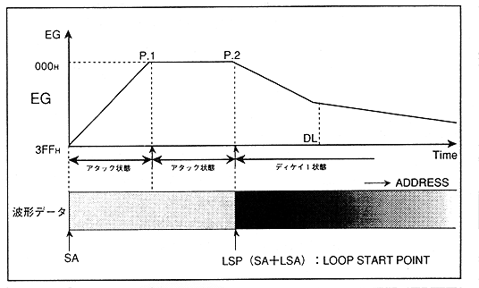
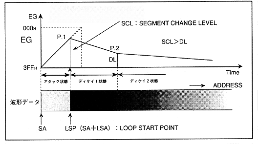

Figure 4.15 Transition from Attack State to Decay 1 (1)

- When EG reaches "000H" in the attack state, the waveform read address is later in time than the loop start point ("SA" + "LSA")
This pattern has two more patterns.
- When the waveform read address reaches the loop start point and the "SCL" (EG level) at this point is greater than "DL" (decay level) (comparing with the actual EG value) (Reverse) (Figure 4.16)
Figure 4.16: Transition from attack state to decay 1 (2)
